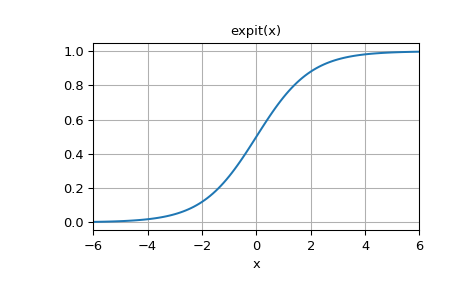

scipy.special.expit¶
-
scipy.special.expit(x) = <ufunc 'expit'>¶ Expit (a.k.a. logistic sigmoid) ufunc for ndarrays.
The expit function, also known as the logistic sigmoid function, is defined as
expit(x) = 1/(1+exp(-x)). It is the inverse of the logit function.- Parameters
- xndarray
The ndarray to apply expit to element-wise.
- Returns
- outndarray
An ndarray of the same shape as x. Its entries are
expitof the corresponding entry of x.
See also
Notes
As a ufunc expit takes a number of optional keyword arguments. For more information see ufuncs
New in version 0.10.0.
Examples
>>> from scipy.special import expit, logit
>>> expit([-np.inf, -1.5, 0, 1.5, np.inf]) array([ 0. , 0.18242552, 0.5 , 0.81757448, 1. ])
logitis the inverse ofexpit:>>> logit(expit([-2.5, 0, 3.1, 5.0])) array([-2.5, 0. , 3.1, 5. ])
Plot expit(x) for x in [-6, 6]:
>>> import matplotlib.pyplot as plt >>> x = np.linspace(-6, 6, 121) >>> y = expit(x) >>> plt.plot(x, y) >>> plt.grid() >>> plt.xlim(-6, 6) >>> plt.xlabel('x') >>> plt.title('expit(x)') >>> plt.show()
